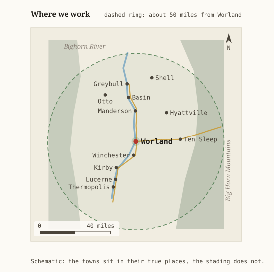

A demonstration. This company is invented, to show a Washakie County trade what a page of its own could look like. The county, the insurance, the safety standard and the state’s own verification are real, and every fact about them is sourced in the middle column.
What this is
Removals, pruning, storm work and stump grinding, out of Worland. The insurance sits at the top of this page instead of in a folder in the truck — and you can check it with the State of Wyoming yourself, before you ever call us.
removals · pruning · storm work · stumps · free written estimates · call or text (307) 555-0168
A sample illustration: the bucket in the cottonwood, the chipper hitched behind.
Everything below is the same on every 3Col site
More Info
Uncheck anything you would rather not read
A Plain answers
Are you insured?
Yes — and you should not have to take our word for it. Here is the whole of it, with the way to check each line without asking us.
One-tap insurance verification
Workers’ compensationState of Wyoming · account 0555017In Wyoming this does not come from a private insurer. The state runs the fund itself1, and for hazardous work like ours the coverage has to be in place before the first day on the job2. If one of our people is hurt in your yard, that is what pays — not you, and not your homeowner’s policy.Check it with the State of Wyoming
General liability$2,000,000 each occurrence · $4,000,000 aggregateThis is the one that matters if a limb goes through your roof, your fence or your neighbor’s car. Written through Basin Mutual Agency in Worland. Ask for the certificate to name you as the certificate holder, and the agent has to tell you if the policy ever lapses.Email the agent for a certificate
Commercial auto$1,000,000 combined single limitOn the bucket truck, the chip truck and the chipper — on your drive and on the road between.
QualificationISA Certified Arborist · RM‑7842ANot insurance, but the same kind of thing: a credential somebody else issued, that somebody else can take away, and that you can look up78.Look up the credential
Every figure above is a sample, because this company is invented. On a real page they would be that company’s real numbers, and the links would go to the same three places they go to here.
Can I check all that myself, before I call?
You can, and it takes about a minute. That is the point of putting it here.
Wyoming will tell you directly. Give the state our federal employer number and it will issue a Certificate of Good Standing covering both workers’ compensation and unemployment insurance — a document from the State of Wyoming, not from us, sent to your own email4. We cannot edit it, delay it or talk you out of it.
The state — FEIN 83‑0555017.cogs.wyo.gov. Workers’ compensation and unemployment insurance, both at once.
The liability policy. That one has to come from the agent, because no state publishes it. The button above writes the email for you.
If a contractor will not give you those three, that is your answer, and it costs you nothing to have asked.
What do you do?
Removals — whole trees, from open pasture to a cottonwood standing over a roof. Rigged down in pieces where there is no room to drop it.
Pruning — deadwood, clearance over a roof or a drive, and structural work on young trees.
Storm and emergency work — a limb down on a fence, a drive or a building. These go ahead of everything else on the list.
Stump grinding — below grade, with the chips left or hauled, as you like.
Lot and fence‑line clearing — russian olive, saltcedar and volunteer growth along ditches and fence lines.
What we do not do: anything within ten feet of an energized power line. That is not modesty, it is the rule5, and there is a better answer for it below.
There is a power line in the tree. Can you take it?
Call the power company first, not us. They will come and look at it for nothing, and often do the work for nothing.
In and around Worland — Rocky Mountain Power, 1‑888‑221‑7070. They will send their own arborist to work out which lines are on your property, and routine pruning for clearance is at no cost to you9. Their own instruction is blunt: never prune limbs or remove trees near power lines.
Out toward Ten Sleep — Big Horn Rural Electric, (307) 568‑241910.
Why we send you away from work we could bill for: OSHA sets ten feet as the closest anyone who is not a qualified line‑clearance arborist may bring themselves or a tool to a line at 50,000 volts or less5. We are a tree service, not a line‑clearance crew. Once the utility has cleared the line, or dropped it, we are glad to take the rest of the tree.
Where do you work?
Out of Worland, across the Bighorn Basin. Roughly an hour in any direction is an ordinary day; past that, ask, and we will tell you honestly whether it is worth your money to have us drive.

Worland at the middle, and about fifty miles of basin around it.
Worland, Ten Sleep, Manderson, Basin, Greybull, Shell, Hyattville, Otto, Winchester, Kirby, Lucerne and Thermopolis.
What does it cost, and how soon can you come?
The estimate is free, it is in writing, and it does not expire in twenty‑four hours to make you decide in a hurry.
What moves the price is access more than size: whether the truck can get to the tree, whether the wood can be dropped or has to be rigged down over something, how far the brush has to be dragged, and what happens to the wood afterward. A big cottonwood in an open pasture is cheaper than a small one between a garage and a power drop.
Storm damage goes first, then the order the work was booked in. In the busy weeks after a wind that can be a few days out; we will tell you which it is when you call, rather than after.
Do you grind the stump — and what about the pipes under it?
Yes, and we call before we grind.
Wyoming law asks anyone breaking ground to give two business days’ notice, so the utilities can come and mark what is buried. It is free, it is one phone call — 811, or 1‑800‑849‑2476 — and the Public Service Commission’s own example of when to do it is planting a tree11. A grinder goes deeper than a shovel, so it is not a formality.
That wait is why a stump is usually a second visit rather than the same afternoon, and it is worth saying out loud so that it does not look like we forgot.
You have a Facebook page. Why this as well?
Because the thing at the top of this page does not work on Facebook.
We could post the certificate of insurance there, and we have. It is now an image in a feed from some week in March, and no stranger deciding this afternoon whether to call us is going to find it. There is nowhere on a feed to put an answer and have it stay put — everything is sorted by when it happened, so the good answer from the spring sinks under the photograph of a chipper.
The whole argument of this page is that you should be able to check us in a minute without asking us. That needs a fixed address, one that is still the same address next spring, that you can reach at nine at night without an account, and that works even if we forget to post for a month.
So we keep both, and you should too if you run something. Facebook is where people find out we exist. This is where they find out whether to trust us.
Who are you?
A two‑truck outfit working out of Worland: a bucket truck, a chipper, a grinder and the people in the picture at the top of this page.
We are invented, for a demonstration — but the shape of the business is the ordinary one for this county, and so is the problem this page is trying to solve. A tree service lives or dies on whether a stranger believes it is insured, and the usual proof is a folded certificate in the glovebox that nobody can check on a Saturday.
What if you change this page after I hire you?
You would be able to prove it, and we could not stop you.
Every page of this site is copied to the Internet Archive, with the date it was taken14. That copy is held by an organization in California that has never heard of us, on their hardware, at their address. We cannot edit it, date it differently, or take it down.
So if the coverage figures above, or the federal employer number, or the credential, are not the same next spring as they are on the day you hire us — the difference is on the record, and it is not our record.
This matters more on a page like this one than on most. Nearly everything above is a claim about insurance, which is worth exactly as much as it is checkable. A promise that can be quietly edited afterward is not a promise.
Latest capture of this page: 26 September 2026.
B Sources
Everything cited in A or C, previewed. The link is always the last line — read the card first and decide whether you need the original at all.
Internal links
The two most recent content changes, and the record behind them.
Wyoming Department of Insurance · state regulator · undated page
States that Wyoming is a monopolistic state, where the state fund is the primary provider of workers’ compensation insurance. Certain exempt employers and employee groups may buy from private insurers on the open market; most may not. Points employers to the Workers’ Compensation Division at (307) 777‑6763 and claims at (307) 777‑7441.
Why it is cited: it is the reason workers’ compensation does not appear on the same certificate as the liability policy, which otherwise looks to a customer like something missing.
Wyoming Department of Workforce Services · Workers’ Compensation Division
Businesses in extra‑hazardous industries must obtain coverage before work begins, with the classification determined from the North American Industry Classification System code the business falls under. Employer services answer on (307) 777‑6763. The division’s own online system lets an employer see its own claims, and nobody else’s.
Why it is cited: it is the rule that makes coverage compulsory for this trade rather than a selling point, and the page that shows there is no public lookup behind it.
Occupational Safety and Health Administration · US Department of Labor · public domain
Says that tree care hazards are addressed in OSHA’s standards for recordkeeping and for general industry. It does not point to a standard written for tree care, because there is not one; the agency reaches the trade through rules written for other purposes.
Why it is cited: it establishes the gap that ANSI Z133 exists to fill, which is the whole reason a voluntary standard matters in this trade.
Certificate of Good Standing — third‑party request
State of Wyoming · Unemployment Insurance and Workers’ Compensation divisions
A form anyone may use. Enter an employer’s federal employer identification number and your own name, address and contact details, with an optional project reference; the system shows the business and whether certificates are available from both divisions, and emails the certificates to the requester. The documents come from the state, not from the employer.
Why it is cited: it is the only independent check a customer in Wyoming has on a contractor’s coverage, and it is the reason this page publishes a federal employer number at all.
29 CFR 1910.333 — selection and use of work practices
Occupational Safety and Health Administration · general industry standard · public domain
At 1910.333(c)(3)(i)(A)(1), an unqualified person working near overhead lines must stay at least 10 feet away where the voltage to ground is 50 kV or below, with the distance increasing above that. The limit applies to conductive objects the person handles as well as to the person. Qualified persons work instead to Table S‑5, whose distances start at a foot.
Why it is cited: it is the actual number behind “we do not touch power lines,” and the difference between a qualified crew and an ordinary one.
Tree Care Industry Association · American National Standard · 2026 edition
The safety standard written for the trade: it applies to employers and employees engaged in arboricultural operations, and the association’s own description notes that although compliance is voluntary the standard carries the force of law in many instances in the United States. Sold as a manual; the text is not free to read.
Why it is cited: it is the measure a tree crew’s practice is judged against where OSHA has written no rule of its own, so naming the edition is a claim a customer could hold us to.
International Society of Arboriculture · Atlanta, Georgia · nonprofit
Certification is examined, either on paper through a chapter or at a Pearson VUE testing center, and is kept up with continuing education units earned through training and other qualifying activity. The society also runs a public lookup where a name or certification number can be checked against its register.
Why it is cited: the credential in column A is only worth printing if a stranger can look it up, so the page has to say who issues it and where the register is.
International Society of Arboriculture · its public register, on the society’s consumer site
The society’s own lookup: a certification number or a name is checked against the register, so a customer can confirm that the card in somebody’s wallet is current and was not simply printed. The tool assembles its page in the browser, which is why the card beside this one describes the credential from the society’s main site instead.
Why it is cited: a credential nobody can check is a decoration, and this is where the checking happens.
Rocky Mountain Power · serving Utah, Wyoming and Idaho
The utility keeps its own arborists, who prune vegetation to keep safe corridors around power lines, reduce wildfire risk and prevent outages. Routine pruning for clearance on distribution lines is at no charge to the customer. Customers with a tree near a line are told to call 1‑888‑221‑7070 for an evaluation, and are told plainly: never prune limbs or remove trees near power lines.
Why it is cited: it is the better answer to a line in a tree than anything this company could sell, and it comes with a telephone number that works.
Washakie Development Association · Worland, Wyoming
The county’s own list of who supplies what. Electricity: Rocky Mountain Power, 888‑221‑7070; Big Horn REA, 307‑568‑2419, serving the Ten Sleep area; High Plains Power, 307‑856‑9426. Gas, propane, telephone and internet suppliers are listed alongside.
Why it is cited: which number to ring for a line in a tree depends on where the tree is, and this is the local list that says so.
Wyoming Public Service Commission · state regulator
Two business days’ notice is required by law before digging. One Call of Wyoming takes the notice free, on 811 or 1‑800‑849‑2476, and the utilities come and mark what is buried. The commission’s own framing covers everything from weekend yard work to major construction, and it names planting a tree as an occasion for it.
Why it is cited: it is why stump grinding is a second visit, and the page would rather explain the delay than look forgetful.
threecolumns.online · the written method, published free
The format this page is built in, and the instructions for building another one: plain answers on the left, every source previewed in the middle, technical detail on the right. One HTML file, no framework, no build step, no database and no server.
Why it is cited: a page that asks to be checked should say what it is made of and where the recipe is.
washakie-ai.online · a grant proposal, not yet submitted
Asks $10,000 for twelve working websites for Washakie County institutions and small businesses, four public workshops, and a written method anybody can follow afterward. A few local trainees from the workshops are the whole of the plan for keeping the sites going once the year is up.
Why it is cited: this page is a sample of what that program would build, and the reader is entitled to know who is proposing to pay for it.
Internet Archive · Wayback Machine · capture taken 26 September 2026, 12:50 UTC
A copy of this page as it was actually served that day, stored by the Internet Archive rather than by us — the insurance figures, the federal employer number and the credential exactly as they read at that moment. Further captures are added as the page changes; the earlier ones stay where they are.
Why it is cited: the answer in column A claims a customer could prove what this page said on the day they hired. This is that proof. It is also the only link on this page that we could not alter even if we wanted to.
Prior know-how is assumed here, and the items become more “technical” toward the bottom. This is the long form; the front page carries the short one. What the insurance actually covers, what a certificate does and does not prove, the rule about power lines, and the machines in the picture.
What a certificate of insurance proves, and what it does not
A certificate of insurance is a one‑page summary an agent types up: who is insured, what kinds of policy are in force, the limits, and the dates. It is evidence, not a contract, and it confers nothing by itself. Three things follow from that, and a customer is entitled to know all three.
It is a snapshot. It says the policy was in force on the day it was typed. A policy can lapse the following week and the paper in your hand will not change. The fix is to be named as the certificate holder, which puts you on the list the agent must notify.
Certificate holder is not the same as additional insured. Holder means you get told. Additional insured means you are covered under the policy for claims arising out of the contractor’s work. For ordinary residential tree work the first is usually the honest and sufficient answer; a commercial client or a property manager may reasonably ask for the second, and it is the agent, not the crew, who can add it.
It can be forged in about four minutes. Which is the whole argument for the state link in column A: a Certificate of Good Standing is generated by Wyoming and mailed to your address, and never passes through the contractor’s hands at all4.
Why workers’ compensation is different in Wyoming
Wyoming is a monopolistic state: the state fund is the provider of workers’ compensation, and for most employers a private policy is not an option on the open market at all1. The practical consequence for anyone hiring a crew here is that workers’ compensation will not appear on the same certificate as the liability policy, because a different body carries it.
Coverage is not optional for this trade. Employers in extra‑hazardous industries must be covered before work begins, and the classification is worked out from the federal industry code the business falls under2. Tree work with saws, at height, beside traffic, is not a borderline case.
The Division does not publish an open coverage lookup — there is no page where you type a business name and see a green check. What exists instead is the Certificate of Good Standing: a third party enters the employer’s federal employer identification number and their own contact details, and the state returns certificates for workers’ compensation and unemployment insurance together4. That is why this page publishes its FEIN, which most trade sites do not. It is the key to the only independent check a customer has.
Power lines, and the ten feet
OSHA’s rule for anyone who is not a qualified person is a fixed distance rather than a judgment call: for voltages to ground of 50 kV or below, ten feet, and more above that — and the distance applies to conductive objects as well as to the body, which includes an aluminum pole saw and a wet rope5. Qualified persons work to a different table and to distances measured in inches, but qualification there is a specific status with training behind it, not a matter of experience or nerve.
This is why the honest answer to a line in a tree is the utility’s telephone number. Rocky Mountain Power keeps its own arborists, will identify which lines on a property are its responsibility, and prunes for clearance at no cost to the customer9. Around Ten Sleep the same call goes to Big Horn Rural Electric instead10. A tree service that takes the job anyway is either qualified for line clearance, and should say so and prove it, or is gambling with somebody else’s life on your property.
The standard the work follows
There is no OSHA standard written for tree care. The agency addresses the trade through its general industry standards and its recordkeeping rules rather than a rule of its own3, which leaves a gap that the industry fills itself.
What fills it is ANSI Z133, the American National Standard for arboricultural operations, published through the Tree Care Industry Association. It applies to employers and employees engaged in arboricultural operations, and although compliance is nominally voluntary it is treated as the measure of reasonable practice — which is to say it carries weight in court whether or not it carries the force of law6. Rigging, saw handling, climbing systems, aerial devices, electrical hazards and the distances above all sit inside it.
The equipment in the picture
Three machines, and each one is in the illustration at the top of this page for a reason.
The bucket truck. An insulated aerial device on a chassis, with a chip body behind the cab, standing on outriggers because a boom at reach turns the truck into a lever. The bucket is the reason a limb over a roof can be cut in pieces small enough to hand down, instead of being dropped and hoped for.
The chipper. Towed behind, fed from the near side, discharging into the chip body. It is the machine that turns a day of brush into an afternoon of hauling, and it is also the single most dangerous thing on the job; the standard has a good deal to say about it.
The grinder. Not in the picture, because it comes on the second visit — after the locate.
Stumps, and what is under them
One‑Call of Wyoming takes two business days’ notice and costs nothing, and the Public Service Commission’s own illustration of when it applies is planting a tree11. A grinder cutting eight to twelve inches below grade, inside the root plate of a tree that was very likely planted along the same easement as the service lines, is a good deal more than planting one.
The marks are good for a limited time and are surface paint and flags, not a guarantee of depth. Nothing about a locate makes it safe to grind blind over a marked line: the marks say where to stop, not how hard to push.
The map, and how it was drawn
The service‑area map in column A is schematic, and says so on its face. The towns are plotted from their published coordinates on a plain equirectangular grid, so their positions relative to one another are true; the shaded ground either side of the basin is an impression of the Big Horns and the Absaroka front, not a survey line, and the ring is drawn at fifty statute miles from Worland measured on the map’s own scale.
Fifty miles was chosen because it is roughly the distance at which a day’s work stops paying for the drive, not because anything official stops there.
One deliberate departure from the format
On every other page in this family, all of column A begins folded shut. Here the first answer — the insurance — is open when the page loads.
The reason is the job this page has to do. A stranger who has just been handed a business card in a parking lot, standing in their yard with a phone, should not have to work out that there is something to tap before they can see whether the company is covered. Everything else on the page folds as usual. It is recorded here because the format asks that a departure be stated rather than quietly taken.
Who keeps this page
A tree service does not build web pages and should not have to. Behind this demonstration, the county’s own people are meant to: a few local trainees from the public workshops, who can change a price, add a storm‑week note, or correct a phone number and publish it in a couple of minutes.
The pilot program that would pay for the first dozen pages like this one is proposed at washakie-ai.online13.
About this page
It is built in the Three Columns format12: plain answers first, every source previewed in the middle, the detail last. It is a handful of plain files the company owns outright — no monthly fee to a web company, no login for anyone who reads it, nothing to keep up but the words. It loads on a phone with one bar, and it prints properly for the folder in the truck.
The whole argument of this page in one line: anything a customer has to take on trust is worth less than the same thing they can check themselves in a minute.
What went wrong
The format asks every page to record at least one thing that went wrong. Building this one, two things did.
The credential lookup could not be read. The International Society of Arboriculture’s verification tool8 is a script that builds its page in the browser, so the card in column B describes what the organization says about the credential rather than what the lookup returns. The exam prerequisites and the renewal period are not stated on this page for the same reason: they could not be confirmed from the source, so they are left out rather than guessed at.
There is no open coverage lookup in Wyoming. The first draft of column A promised one. There is not one — only the Certificate of Good Standing, which needs a federal employer number and an email address. The answer was rewritten around what exists.